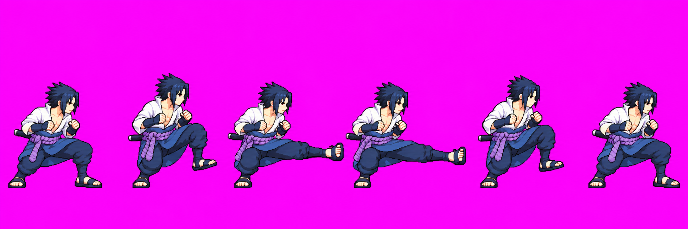

Sasuke directional normals — ENG-112
Review-only art candidates. Via Claude relay combat #3, the user approved uTilt v01, fSmash v02, fair v03, bair v01 and uair v01 as drawings; via relay #7, they approved fTilt v03, dashAttack v05 and uSmash v05 as drawings. Relay #5 records the user's rejection of dTilt v02 because it reads as a stomach-height thrust instead of a crouched shin poke. The user approved dTilt v05 as drawn via relay #13 after reviewing packed cells 181–186; it remains the approved drawing. Relay #10 authorized kick-specific dTilt v06; it is still shown below from source for review, but its scale gate fails. Relay #11 authorized a no-generation deterministic 8% head enlargement for approved uTilt v01. The new uTilt v05 is the next unused version because v02/v03 attempts and a v04 edit attempt are retained; this page shows quantized v05 frames and before/after source heads. The move remains unapproved, and its stand-in stays active. The user directed via relay #8 that dSmash keeps its stand-in. Candidate previews below show quantized atlas crops beside the stand-ins and approved idle f0 at 256 px per cell.
Technical audit: HOLD for the fighter pack. Astra inspected all seven quantized uTilt v05 cells and found the requested head enlargement has no obvious jaw/collar gap or limb displacement. Full numerical anatomy/scale remains HOLD: readable f6 head=.921, manual uncertainty about ±2–3 packed px, body-sheet B median=.917 below the .93 target. The candidate default gate passes with v05-only f2/f3 raised-arm probe exemptions; readable-head median .996. The strict all-strips dry run fails on dTilt v06 (head 1.09, feet 1.50). The review atlas was packed with dTilt v06 temporarily held out, so it contains approved dTilt v05 and unapproved uTilt v05. User seam review is pending; drawing approval cannot clear these technical holds. Runtime contact/timing remain Claude's integration check. The other approved drawings remain in technical hold with stand-ins active. fair v03 passed head scale after a measured 0.9407 import fit, but body-sheet B=.73–.81 remains advisory pending precise segment measurements. fTilt v03 remains held for anatomy and phase/contact mismatch; dashAttack v05 for endpoint scale, phase and generic-box concerns; uSmash v05 for scale pop/anatomy.
Branch quantized atlas (includes review candidate dTilt v05) · Earlier full quantized diagnostic atlas for Astra · Diagnostic atlas notes · branch anims.json · lineup diagnostic · prior body report · current production site (not this branch preview)


The loop GIFs and frame PNGs for pending candidates are exact crops from the current quantized review atlas, beside stand-ins and approved idle at 256 px per cell. A candidate shown here does not itself approve the drawing or change the fallback. Raw generated strips are linked in each section. Runtime contact remains unverified.
dTilt v06 — kick-specific retry, scale hold
Six poses: ready crouch, kick chamber, shin-height kick, shin-height kick, retraction, crouch. Sasuke's fists stay in guard and his sword stays sheathed. The raw strip is shown for visual review. The quantized scale gate measured the source head at 1.47× idle and feet at 1.96×; the auto-head fit required 0.68, outside the allowed 0.75–1.33 range. Clamping to 0.75 still leaves head 1.09× and feet 1.50×, and clips the active frames into the cell edge. The packer wrote no v06 atlas, so the technical hold remains and the user has not approved v06.

Open raw strip. The exact prompts, call IDs, input path and output hashes are recorded in the branch's `art/characters/sasuke/production/dTilt_v06_generation_attempts.md`. Previous v05 loop remains in the move list below.